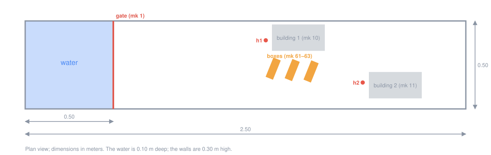
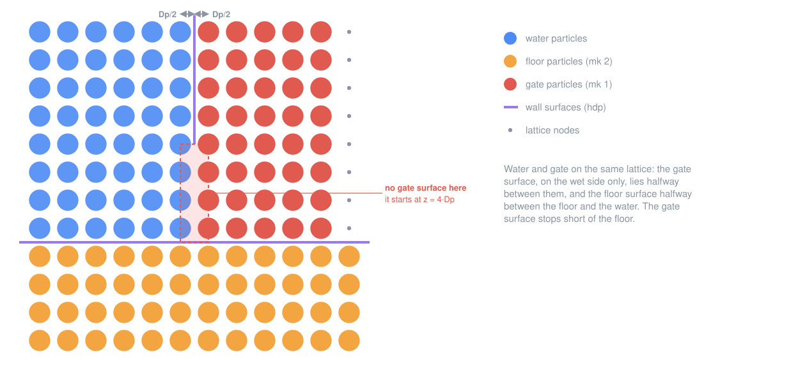
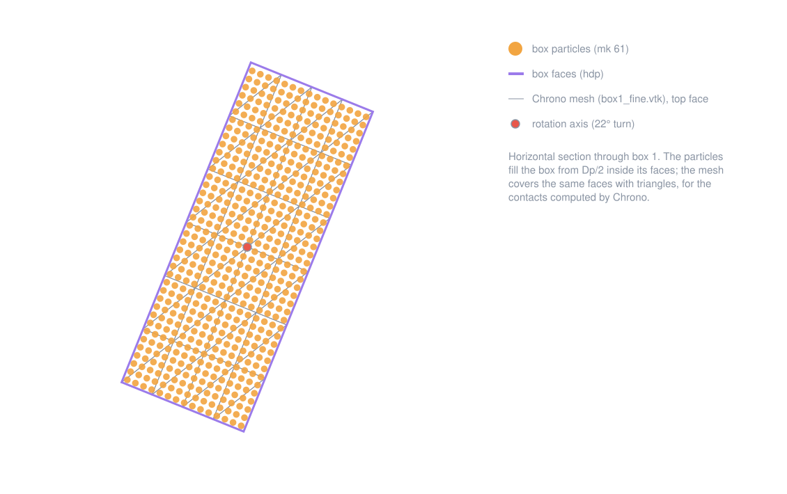
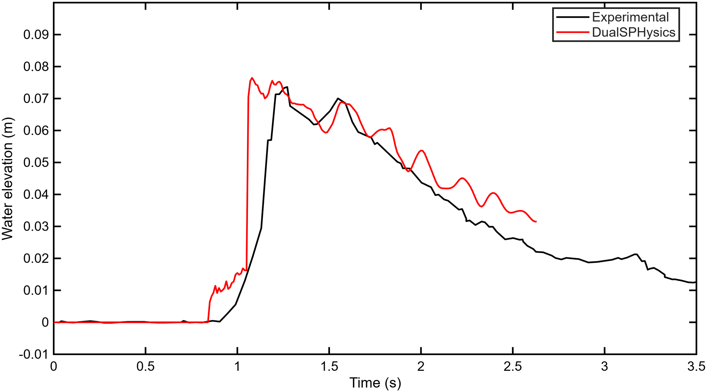
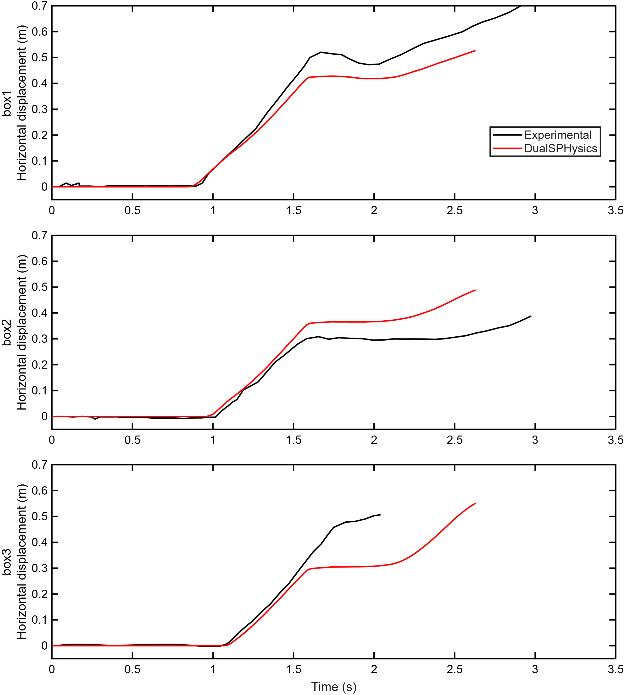

Dambreak debris¶
Under review by Bonaventura Tagliafierro
This benchmark is a 3-D dam break with floating debris. A gate lifts and releases a shallow reservoir; the flood carries three small boxes along the tank, between two buildings, where they collide with each other and with the floor. The water level at two probes and the displacement of the three boxes are compared with the experiments of Albano et al. (2016).
The case is supplied in examples/benchmarks/05_DambreakDebris. This page explains its configuration in detail, and in particular its geometry: how each object is made of particles with a wall surface for mDBC, and why the bodies that collide also need a surface mesh for Chrono.
What's Covered in This Tutorial
- A geometry where every wall surface is Dp/2 from its boundary particles, without aligning the lattice with every object
- Floating boxes turned into position with
rotateaxis - Surface meshes for the bodies that collide, computed by Chrono
- Materials for the contacts: pvc for the boxes, bakelite for the floor
- A gate lifted with an imposed motion, and mixed boundary conditions
Video: To be updated.
Case configuration¶
Physical setup¶

| Element | Dimensions [m] | Position | mk |
|---|---|---|---|
| Tank | 2.50 × 0.50 × 0.30 | from the origin | 2 |
| Reservoir | 0.50 × 0.50, 0.10 deep | behind the gate | fluid 0 |
| Gate | 0.03 thick | \(x=0.50\); lifted at 0.11 m/s for 1.5 s | 1 |
| Building 1 | 0.30 × 0.15 × 0.30 | corner at \((1.40, 0.33)\) | 10 |
| Building 2 | 0.30 × 0.15 × 0.30 | corner at \((1.95, 0.06)\) | 11 |
| Boxes | 0.045 × 0.118 × 0.0425, 0.025 kg each | three in a row, turned by 22° | 61, 62, 63 |
| Floor (contact body) | the floor of the tank | 3 | |
| Particle spacing | \(Dp = 0.003\) |
Physical constants¶
<constantsdef>
<gravity x="0" y="0" z="-9.81" comment="Gravitational acceleration" units_comment="m/s^2" />
<rhop0 value="998" comment="Reference density of the fluid" units_comment="kg/m^3" />
<rhopgradient value="2" comment="Initial density gradient 1:Rhop0, 2:Water column, 3:Max. water height (default=2)" />
<coefsound value="40" comment="Coefficient to multiply speedsystem" />
<speedsound value="60" auto="false" comment="Speed of sound to use in the simulation (by default speedofsound=coefsound*speedsystem)" />
<coefh value="1.3" comment="Coefficient to calculate the smoothing length (h=coefh*sqrt(3*dp^2) in 3D)" />
<cflnumber value="0.2" comment="Coefficient to multiply dt" />
</constantsdef>
Fluid: water with reference density 998 kg/m³; rhopgradient=2 starts the reservoir with a hydrostatic density profile.
Speed of sound: speedsound is given directly, 60 m/s (auto="false"), instead of being computed from coefsound.
Smoothing length: in 3D, \(h = \mathrm{coefh}\,\sqrt{3}\,Dp = 1.3\sqrt{3}\times0.003 = 0.0068\) m. Each particle interacts with neighbors up to \(2h\) = 4.50·Dp away.
Geometry definition¶
The particle lattice and the wall surfaces¶
<definition dp="#Dp" units_comment="metres (m)">
<pointref x="0" y="0" z="0" />
<pointmin x="-0.2" y="-0.2" z="-0.2" />
<pointmax x="3" y="0.7" z="1" />
</definition>
The lattice: pointref is the origin, so the nodes are at integer multiples of Dp = 3 mm from it.
One rule for every object: the objects of this case are not placed on the lattice as in the Dambreak 3D benchmark; most of their faces, such as the gate at \(x=0.50\) or the far wall at \(x=2.50\), are not at a multiple of Dp. The case keeps one rule instead: every wall surface is exactly Dp/2 from its boundary particles, so that the normals and the ghost nodes of mDBC are correct for every object. The geometry is built in two ways, depending on the object:
| Object | Particles | Wall surface (hdp) |
|---|---|---|
| Tank | through the walls, layers vdp="0,1,2,3" outwards |
layers vdp="-0.5": Dp/2 inside the walls |
| Gate | through its face, layers vdp="-0,-1,-2,-3,-4" into the gate |
layers vdp="0.5": Dp/2 in front of its face |
| Buildings, boxes | layers vdp="-0.5,-1.5,-2.5": from Dp/2 inside their faces |
on their faces, layers vdp="0" |
The fluid: the water is on the lattice of the case. Next to the floor and the walls through the origin, which are on the lattice, the first water particles are also Dp/2 from the surface, as intended everywhere (Figure 2). Next to faces that are not on the lattice, the distance between the water and the wall surface varies between 0 and Dp. This makes the case sensitive to small changes of the geometry or of Dp.

Tank and water¶
<!-- water -->
<setmkfluid mk="0" />
<drawbox>
<boxfill>solid</boxfill>
<point x="0" y="0" z="0" />
<size x="0.5" y="0.5" z="0.1" />
</drawbox>
...
<!-- tank walls -->
<setmkbound mk="2" />
<drawbox>
<boxfill>bottom|back|front|left|right</boxfill>
<point x="#0" y="#0" z="#0" />
<size x="#2.5" y="#0.5" z="0.3" />
<layers vdp="0,1,2,3" />
</drawbox>
Water first: the reservoir is a solid box from the origin, drawn before the walls. The walls are drawn through the same nodes at \(x=0\), \(y=0\), and \(z=0\), and the last drawing wins, so the first water particles are one spacing inside the tank.
Tank: layers vdp="0,1,2,3" draws four layers outwards from the walls. In GeometryForNormals, the same box with layers vdp="-0.5" moves the wall surfaces half a spacing inwards, halfway between the walls and the water.
Gate¶
<!-- gate -->
<setmkbound mk="1" />
<drawbox>
<boxfill>left</boxfill>
<point x="#0.5" y="#0" z="#Dp" />
<size x="#0.03" y="#0.5" z="#0.15" />
<layers vdp="-0,-1,-2,-3,-4" />
</drawbox>
Gate: only the face towards the water is drawn (left), in five layers into the gate, with FreeDraw, from \(x=0.50\). It starts one row above the floor. Its wall surface is the same face moved half a spacing towards the water (layers vdp="0.5"), on the wet side only.
Gate surface above the floor: in GeometryForNormals, the gate surface starts at \(z\) = 4·Dp, not at the floor (point z="#4*Dp"), so the lowest rows of gate particles have no gate surface next to them (Figure 2). This avoids problems near the corner between the gate and the floor, where the two surfaces would meet.
Motion: the gate (objreal ref="1") moves up at 0.11 m/s for 1.5 s from the start, opening 0.165 m, higher than the water.
Buildings and boxes¶
<!-- box 1 -->
<setmkbound mk="61" />
<drawbox>
<boxfill>solid</boxfill>
<point x="#1.3845" y="#0.17" z="0.01" />
<size x="#0.045" y="#0.118" z="#0.0425" />
<layers vdp="-0.5,-1.5,-2.5" />
</drawbox>
Particles inside the faces: the buildings and the boxes are drawn with FreeDraw, so their particles start exactly at their own corner, not on the lattice of the case. layers vdp="-0.5,-1.5,-2.5" puts the first layer Dp/2 inside every face. In GeometryForNormals, the same boxes are drawn on their real faces, so the wall surface is Dp/2 from the first layer.
Turning the boxes: the boxes are drawn aligned with the tank, and then turned into their experimental position:
<initials>
<rotateaxis mkbound="61" angle="22" anglesunits="degrees">
<axisp1 x="1.407" y="0.229" z="0" />
<axisp2 x="1.407" y="0.229" z="1" />
</rotateaxis>
<!-- the same for boxes 62 and 63 -->
</initials>
rotateaxis turns the particles of each box by 22° about a vertical axis through its center, given by two points. Figure 3 shows box 1 after the rotation: its particles, its faces, and its mesh.

The floor as a contact body¶
<!-- phantom body for bottom 3 -->
<setactive drawpoints="1" drawshapes="0" />
<setmkbound mk="3" />
<drawbox>
<boxfill>solid</boxfill>
<point x="#0" y="#0" z="#0" />
<size x="#Dp" y="#Dp" z="#Dp" />
</drawbox>
A floor for Chrono: the boxes slide and land on the floor, so the floor must be a body for Chrono. The floor particles belong to the tank (mk 2), so a separate marker is created for it: mk 3, with a single particle at the origin. This phantom body only gives Chrono a marker to attach the floor mesh and the floor material to; the water sees the floor particles of the tank.
Boundary normals¶
<normals active="true">
<norgeometry comment="Define initial configuration of normals before applying other configurations">
<geometryfile file="[CaseName]_hdp_Actual.vtk" comment="File with boundary geometry (VTK format)" />
<distanceh v="3" comment="Maximum orthogonal distance (H*value) to compute normals data (default=2)" />
</norgeometry>
</normals>
GenCase reads the wall surfaces of the tank, the gate, the buildings, and the boxes, saved as DambreakDebris_hdp_Actual.vtk, and computes a normal for every boundary particle up to \(3h\) from them.
Contacts with Chrono¶
Why the bodies need a mesh¶
The fluid and the boxes interact through their particles, as in every case. Contacts between solid bodies, a box hitting another box or landing on the floor, are computed by Chrono, which works with surfaces, not particles. Each body that takes part in a contact therefore needs a surface mesh: a closed triangulated surface of the body, in its initial position.
<chrono>
<savedata value="0.01" comment="Saves CSV with data exchange for each time interval (0=all steps)" />
<schemescale value="1" comment="Scale used to create the initial scheme of Chrono objects (default=1)" />
<ompthreads value="3" comment="Number of Chrono OpenMP threads (default=1)" />
<collision activate="true">
<distancedp value="#DistDpValue" comment="Allowed collision overlap according Dp (default=0.5)" />
<contactmethod value="0" comment="Contact method type. 0:NSC (Non Smooth Contacts), 1:SMC (SMooth Contacts). (default=0)" />
</collision>
<timestepper>
<substepping mode="auto" comment="off|fixed|auto. When off, one Chrono step is used per DualSPHysics step.">
<maxdt value="5e-5" comment="Maximum internal Chrono dt. 0 uses DualSPHysics dt." />
<maxsteps value="100" comment="Maximum Chrono substeps per DualSPHysics step." />
</substepping>
</timestepper>
<bodyfixed id="bottom" mkbound="3" modelfile="bottom_fine.vtk" />
<bodyfloating id="box61" mkbound="61" modelfile="box1_fine.vtk" />
<bodyfloating id="box62" mkbound="62" modelfile="box2_fine.vtk" />
<bodyfloating id="box63" mkbound="63" modelfile="box3_fine.vtk" />
<bodyfixed id="building" mkbound="11" modelfile="building_fine.vtk" />
</chrono>
Bodies: each Chrono body is linked to the particles of one marker (mkbound) and to its mesh (modelfile):
- Floating: the three boxes, which move with the fluid and the contacts (
bodyfloating). - Fixed: the floor (mk 3) and building 2 (mk 11), which only receive contacts (
bodyfixed).
The meshes: the files are VTK surfaces made of triangles, in the final position of each body. box1_fine.vtk, for example, has 114 points and 208 triangles; it is the box of 0.045 × 0.118 × 0.0425 m turned by 22°, and its faces coincide with the wall surfaces of box 1 (Figure 3). The meshes are refined, with edges of at most 0.04 m, so that the contacts are detected on every face, not only at the corners.
Where the meshes are read: the launch script copies the five .vtk meshes from the case folder into DambreakDebris_out/ before running GenCase, where Chrono looks for them.
Contacts: contactmethod=0 uses non-smooth contacts (NSC). distancedp is the overlap allowed between two bodies, as a fraction of Dp: TargetDistance/Dp = 0.4 mm / 3 mm = 0.13.
Time step: Chrono advances with its own time step, at most maxdt = 5·10⁻⁵ s and at most 100 substeps per step of DualSPHysics (substepping mode="auto"). savedata writes the data exchanged with Chrono every 0.01 s.
Materials¶
<properties>
<propertyfile file="Floating_Materials.xml" path="materials" />
<links>
<link mkbound="1" property="steel" comment="Property for the gate" />
<link mkbound="2" property="glass" comment="Property for the walls" />
<link mkbound="3" property="bakelite" imposefric="true" comment="Property for the bottom" />
<link mkbound="10" property="steel" comment="Property for the building1" />
<link mkbound="11" property="steel" comment="Property for the building2" />
</links>
</properties>
<floatings>
<floating mkbound="61" property="pvc" >
<massbody value="0.025" />
</floating>
<floating mkbound="62-63" property="pvc" >
<massbody value="0.025" />
</floating>
</floatings>
Material file: Floating_Materials.xml lists the properties of several materials; links and the property of each floating body assign them to the markers.
The two materials that matter: the contacts of this case are between the boxes, and between the boxes and the floor, so only two materials matter: pvc for the boxes, and bakelite for the floor. imposefric="true" makes the friction of the floor apply to its contacts.
| Property | pvc (boxes) | bakelite (floor) |
|---|---|---|
| Young modulus [N/m²] | 3.0·10⁹ | 3.0·10⁹ |
| Poisson ratio | 0.30 | 0.30 |
| Restitution coefficient | 0.55 | 0.55 |
| Kinetic friction coefficient | 0.36 | 0.36 |
Mass: each box weighs 0.025 kg (massbody); its center of gravity and inertia are computed from its particles.
Boundary conditions¶
<mixboundary>
<default boundtype="MDBC_T0" nopenetration="1" />
<bcmk mkbound="61-63" boundtype="MDBC_NS" nopenetration="0" />
</mixboundary>
Mixed boundaries: the boundary method is MIX, which sets the boundary condition by marker. The tank, the gate, and the buildings use mDBC with zero tangential velocity and the no-penetration option (default); the boxes use mDBC with no-slip and without the no-penetration option (bcmk mkbound="61-63").
Numerical parameters¶
Floating bodies: their motion is computed with Chrono (RigidAlgorithm 3), and they stay frozen for the first 0.8 s (FtPause), while the gate opens and the flood arrives.
Viscosity: laminar viscosity with the kinematic viscosity of water at the temperature of the experiment, 8.96·10⁻⁷ m²/s, and the SPS turbulence model.
Density diffusion and shifting: the Fourtakas density diffusion with coefficient 0.1 (Fourtakas et al., 2019), and standard shifting, with the 3-D free-surface threshold 2.75.
Duration and output: the simulation runs for 3.5 s, and saves the particles every 0.01 s.
Domain: default determines the solver domain as the box around all the generated particles, and z="default+20%" raises its top by 20% of its height.
Running the simulation¶
Input files¶
Work in examples/benchmarks/05_DambreakDebris/:
| File | Purpose |
|---|---|
DambreakDebris_Def.xml |
Case definition, read by GenCase |
Floating_Materials.xml |
Material properties for the contacts |
bottom_fine.vtk, box1_fine.vtk, box2_fine.vtk, box3_fine.vtk, building_fine.vtk |
Surface meshes of the Chrono bodies |
elevation.txt |
Vertical sampling lines at the probes h1 and h2 |
wDambreakDebris_win64_GPU.bat |
Windows: GenCase, GPU simulation, and post-processing |
reference/Experimental_Data_Albano_2016.xlsx |
Experimental water levels and box positions |
Windows¶
From the case folder, run wDambreakDebris_win64_GPU.bat. Before GenCase, it copies the meshes into the output folder:
rem Prepares the five existing Chrono VTK geometry files.
mkdir "%dirout%"
if not "%ERRORLEVEL%" == "0" goto fail
copy "*.vtk" "%dirout%"
if not "%ERRORLEVEL%" == "0" goto fail
rem Executes GenCase to create initial files for simulation.
%gencase% %name%_Def %dirout%/%name% -save:all
if not "%ERRORLEVEL%" == "0" goto fail
rem Executes DualSPHysics to run the SPH simulation.
%dualsphysicsgpu% -gpu %dirout%/%name% %dirout%
if not "%ERRORLEVEL%" == "0" goto fail
Post-processing¶
set dirout2=%dirout%\floatinginfo
%floatinginfo% -dirdata %diroutdata% -onlymk:71-73 -savedata %dirout2%/DebrisMotion
if not "%ERRORLEVEL%" == "0" goto fail
set dirout2=%dirout%\measure
%measuretool% -dirdata %diroutdata% -points elevation.txt -onlytype:-all,+fluid -elevation:0.5 -savecsv %dirout2%/WaterHeight
if not "%ERRORLEVEL%" == "0" goto fail
FloatingInfo: writes the motion of the boxes, whose final markers are 61 + 10 = 71 to 73, to floatinginfo/DebrisMotion.
MeasureTool: elevation.txt defines two vertical lines at the probes, h1 at \((1.365, 0.39)\) and h2 at \((1.915, 0.15)\), each with 100 points from the floor, 1 mm apart; -elevation:0.5 returns the water level along each line.
The script also writes the water particles (PartVTK), the excluded particles (PartVTKOut), the surfaces of the boxes (BoundaryVTK), and the free surface (IsoSurface).
Results and validation¶
reference/Experimental_Data_Albano_2016.xlsx contains the water level at h1 and the positions of the three boxes along the tank. The box displacements are measured from their initial positions (Figures 4 and 5).


References¶
◆ Albano, R., Sole, A., Mirauda, D., & Adamowski, J. (2016). Modelling large floating bodies in urban area flash-floods via a Smoothed Particle Hydrodynamics model. Journal of Hydrology, 541, 344-358. DOI: 10.1016/j.jhydrol.2016.02.009.